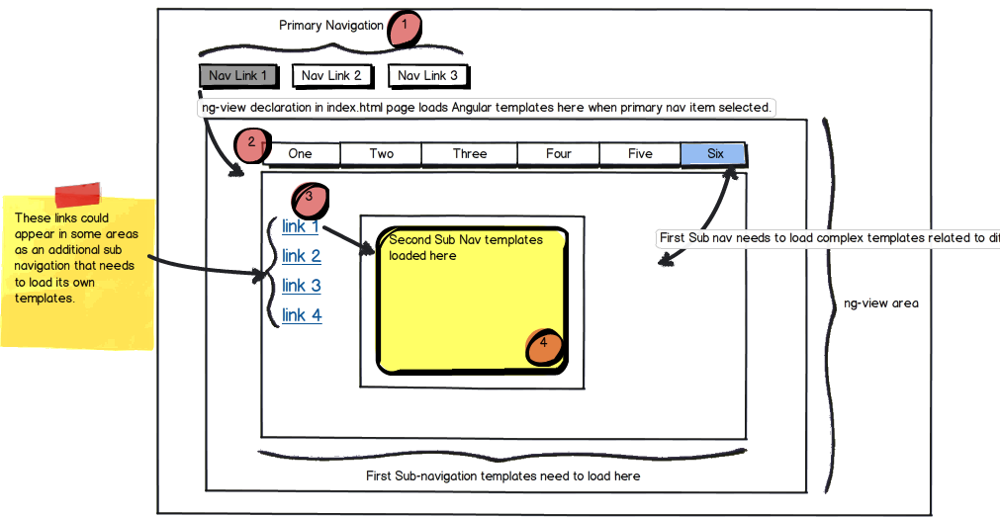

Complex nesting of partials and templates
My question involves how to go about dealing with complex nesting of templates (also called partials ) in an AngularJS application.
The best way to describe my situation is with an image I created:

As you can see this has the potential to be a fairly complex application with lots of nested models.
The application is single-page, so it loads an index.html that contains a
div element in the DOM with the ng-view attribute.
For circle 1 , You see that there is a Primary navigation that loads the
appropriate templates into the ng-view. I'm doing this by passing
$routeParams to the main app module. Here is an example of what's in my app:
angular.module('myApp', []). config(['$routeProvider', function($routeProvider) { $routeProvider. when("/job/:jobId/zones/:zoneId", { controller: JobDetailController, templateUrl: 'assets/job_list_app/templates/zone_edit.html' }). when("/job/:jobId/initial_inspection", { controller: JobDetailController, templateUrl: 'assets/job_list_app/templates/initial_inspection.html' }). when("/job/:jobId/zones/:zoneId/rooms/:roomId", { controller: JobDetailController, templateUrl: 'assets/job_list_app/templates/room_edit.html' }) }]);
In circle 2 , the template that is loaded into the ng-view has an
additional sub-navigation. This sub-nav then needs to load templates into
the area below it - but since ng-view is already being used, I'm not sure how
to go about doing this.
I know that I can include additional templates within the 1st template, but these templates are all going to be pretty complex. I would like to keep all the templates separate in order to make the application easier to update and not have a dependency on the parent template having to be loaded in order to access its children.
In circle 3 , you can see things get even more complex. There is the potential that the sub-navigation templates will have a 2nd sub-navigation that will need to load its own templates as well into the area in circle 4
How does one go about structuring an AngularJS app to deal with such complex nesting of templates while keeping them all separate from one another?
Answer
Well, since you can currently only have one ngView directive... I use nested directive controls. This allows you to set up templating and inherit (or isolate) scopes among them. Outside of that I use ng-switch or even just ng- show to choose which controls I'm displaying based on what's coming in from $routeParams.
EDIT Here's some example pseudo-code to give you an idea of what I'm talking about. With a nested sub navigation.
Here's the main app page
<!-- primary nav --> <a href="#/page/1">Page 1</a> <a href="#/page/2">Page 2</a> <a href="#/page/3">Page 3</a> <!-- display the view --> <div ng-view> </div>
Directive for the sub navigation
app.directive('mySubNav', function(){ return { restrict: 'E', scope: { current: '=current' }, templateUrl: 'mySubNav.html', controller: function($scope) { } }; });
template for the sub navigation
<a href="#/page/1/sub/1">Sub Item 1</a> <a href="#/page/1/sub/2">Sub Item 2</a> <a href="#/page/1/sub/3">Sub Item 3</a>
template for a main page (from primary nav)
<my-sub-nav current="sub"></my-sub-nav> <ng-switch on="sub"> <div ng-switch-when="1"> <my-sub-area1></my-sub-area> </div> <div ng-switch-when="2"> <my-sub-area2></my-sub-area> </div> <div ng-switch-when="3"> <my-sub-area3></my-sub-area> </div> </ng-switch>
Controller for a main page. (from the primary nav)
app.controller('page1Ctrl', function($scope, $routeParams) {
$scope.sub = $routeParams.sub;
});
Directive for a Sub Area
app.directive('mySubArea1', function(){ return { restrict: 'E', templateUrl: 'mySubArea1.html', controller: function($scope) { //controller for your sub area. } }; });
Suggest
Well, since you can currently only have one ngView directive... I use nested directive controls. This allows you to set up templating and inherit (or isolate) scopes among them. Outside of that I use ng-switch or even just ng- show to choose which controls I'm displaying based on what's coming in from $routeParams.
EDIT Here's some example pseudo-code to give you an idea of what I'm talking about. With a nested sub navigation.
Here's the main app page
<!-- primary nav --> <a href="#/page/1">Page 1</a> <a href="#/page/2">Page 2</a> <a href="#/page/3">Page 3</a> <!-- display the view --> <div ng-view> </div>
Directive for the sub navigation
app.directive('mySubNav', function(){ return { restrict: 'E', scope: { current: '=current' }, templateUrl: 'mySubNav.html', controller: function($scope) { } }; });
template for the sub navigation
<a href="#/page/1/sub/1">Sub Item 1</a> <a href="#/page/1/sub/2">Sub Item 2</a> <a href="#/page/1/sub/3">Sub Item 3</a>
template for a main page (from primary nav)
<my-sub-nav current="sub"></my-sub-nav> <ng-switch on="sub"> <div ng-switch-when="1"> <my-sub-area1></my-sub-area> </div> <div ng-switch-when="2"> <my-sub-area2></my-sub-area> </div> <div ng-switch-when="3"> <my-sub-area3></my-sub-area> </div> </ng-switch>
Controller for a main page. (from the primary nav)
app.controller('page1Ctrl', function($scope, $routeParams) {
$scope.sub = $routeParams.sub;
});
Directive for a Sub Area
app.directive('mySubArea1', function(){ return { restrict: 'E', templateUrl: 'mySubArea1.html', controller: function($scope) { //controller for your sub area. } }; });